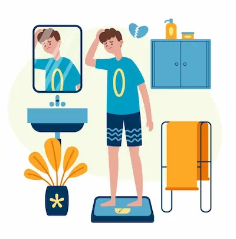

Sudar adelgaza': El error que persiste en gimnasios
La Confusión Entre Sudor y Pérdida de Grasa
El sudor es simplemente el mecanismo que utiliza el cuerpo para regular su temperatura interna cuando se eleva durante el ejercicio o en ambientes calurosos. Está compuesto principalmente por agua y electrolitos, y su producción no tiene relación directa con la quema de grasa. Muchas personas creen erróneamente que cuanto más sudan, más calorías están quemando, pero en realidad, la cantidad de sudor depende de factores como la genética, la temperatura ambiente y la hidratación previa, no de la intensidad del ejercicio o la quema de grasa.
Un estudio publicado en The Journal of Sports Medicine and Physical Fitness demostró que la pérdida de peso inmediata después de una sesión de ejercicio intenso en un ambiente caluroso se debe casi exclusivamente a la deshidratación, no a la reducción de grasa corporal. Este peso perdido se recupera rápidamente al rehidratarse, lo que demuestra que el sudor no es un indicador de pérdida de grasa. Además, forzar la sudoración excesiva mediante el uso de fajas o saunas puede ser peligroso, ya que lleva a la deshidratación severa, afectando el rendimiento físico y la salud en general.
Termodinámica y Quema Real de Grasa
La quema de grasa es un proceso metabólico que ocurre cuando el cuerpo utiliza las reservas de grasa como fuente de energía, y esto solo sucede cuando hay un déficit calórico sostenido. La termodinámica básica nos enseña que para perder grasa, el gasto energético total debe superar la ingesta calórica. Este proceso no está relacionado con la sudoración, sino con la combinación de ejercicio regular, una dieta adecuada y un estilo de vida activo.
Por ejemplo, actividades como el levantamiento de pesas o el HIIT (entrenamiento interválico de alta intensidad) pueden no producir tanto sudor como una sesión de cardio en una bicicleta estática, pero son mucho más efectivas para aumentar el metabolismo y promover la quema de grasa a largo plazo. Esto se debe a que estos ejercicios generan un mayor "afterburn effect" (exceso de consumo de oxígeno post-ejercicio), donde el cuerpo continúa quemando calorías incluso después de haber terminado el entrenamiento. En contraste, actividades que generan mucha sudoración pero son de baja intensidad, como el yoga caliente, tienen un impacto mínimo en la quema de grasa a pesar de la sensación de esfuerzo.
Ejemplos de Actividades Efectivas vs. Mitos
Es crucial diferenciar entre actividades que promueven la pérdida de grasa y aquellas que simplemente inducen una pérdida temporal de agua. Correr o nadar a intensidad moderada-alta son ejemplos de ejercicios que, aunque pueden hacer sudar, su verdadero beneficio radica en su capacidad para crear un déficit calórico y mejorar la condición cardiovascular. Por otro lado, métodos como usar plásticos alrededor del abdomen o entrenar con exceso de ropa para sudar más no solo son ineficaces para perder grasa, sino que pueden ser perjudiciales, ya que aumentan el riesgo de deshidratación, golpe de calor y problemas circulatorios.
Un error común es medir el éxito de un entrenamiento por la cantidad de sudor producido. En realidad, deberíamos fijarnos en indicadores más precisos, como la progresión en la carga de trabajo, la mejora en la resistencia o la reducción de medidas corporales a lo largo del tiempo. La ciencia respalda que la combinación de entrenamiento de fuerza y cardio, junto con una dieta equilibrada, es la estrategia más efectiva para perder grasa de manera sostenible y saludable.
Hidratación y Su Papel en el Peso Corporal
La hidratación juega un papel fundamental en el metabolismo y la pérdida de peso. Cuando el cuerpo está deshidratado, su capacidad para quemar grasa se ve comprometida, ya que el hígado, responsable de metabolizar las grasas, debe asumir parte del trabajo de los riñones para mantener el equilibrio hídrico. Además, la deshidratación puede generar una falsa sensación de hambre, llevando a comer en exceso. Por lo tanto, es esencial mantener una adecuada ingesta de agua antes, durante y después del ejercicio.
Un estudio de The American Journal of Clinical Nutrition encontró que las personas que bebían medio litro de agua antes de cada comida perdían un 44% más de peso que aquellas que no lo hacían. Esto demuestra que, aunque el agua no "quema grasa" directamente, su consumo adecuado optimiza los procesos metabólicos necesarios para la pérdida de peso. En conclusión, más que buscar sudar, debemos enfocarnos en mantenernos hidratados y en elegir actividades que realmente promuevan un déficit calórico y un metabolismo activo.